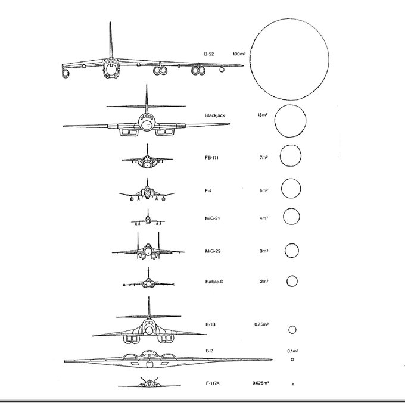

Stealth in Aircraft
i am not an expert, and a lot of the info behind this is classified, so i can only use the public info - -;
I'm just going to talk about stealth in aircraft, and the engineering behind stealthy aircraft
stealth is... pretty difficult, at least in aircraft. and there are certainly limits to it, but i'll at least talk about it since it is pretty fun
The stealthiest plane (we know of)
the B-2
the B-2 is one of the best examples of a stealty plane, it has a perfect track record of never being shot down and remains to be one of the best planes in terms of stealth
Radar Cross Section is chiefly important in stealth technology for aircraft, missiles, ships, and other military vehicles. With a smaller appearance on radar, vehicles can better evade radar detection, whether it be from land-based installations, guided weapons or other vehicles. Reduced signature design also improves platforms' overall survivability through the improved effectiveness of its radar counter-measures.
Several methods exist. The distance at which a target can be detected for a given radar configuration varies with the fourth root of its Stealth. Therefore, in order to cut the detection distance to one tenth, the "Radar Cross Section" should be reduced by a factor of 10,000. While this degree of improvement is challenging, it is often possible when influencing platforms during the concept/design stage and using experts and advanced computer code simulations to implement the control options described below.

Despite looking really cool its also a great example of stealth technology in military aviation.
the geometry of the B-2 spirit is a big factor of it's stealth capabilities, note the sharp, diamond like shape of its fuselage and wing and the engines nestled inside the fuselage. also the fact the fuselage is the wing!
this is to sort of deflect the radar trying to find the plane, making it appear significantly smaller to the radar.
its pretty complicated, but it pays off considering the absolutely tiny radar cross-section of the B-2:

Radar Cross Section
Radar Cross Section (RCS) is a measure of how detectable an object, in this case a plane, is by radar. a larger RCS means the object would be easier to detect.
these factors all come into play to determine the radar cross section of an object:
-
the material with the object is made of
-
the size of the object relative to the wavelength of the illuminating radar source
-
the absolute size of the object
-
the angle of incidence
-
the reflected angle
-
the polarization of the transmitted and the recieved radiation with respect ot the orientation of the target
in some cases its of interest to look at an area of the ground that includes many objects, In those situations, it is useful to use a related quantity called the differential scattering coefficient, which is the average radar cross-section of a set of objects per unit area

where:
-RCS is the radar cross-section of a particular object, and
-A is the area on the ground associated with that object.
so, how do you limit your RCS?
well, there are quite a few ways. The SR-71 used a special "iron ball paint" that consisted of small, metal coated balls. these would make it so recieved radar energy is converted to heat rather than being reflected
Geometry
however arguably the best way to limit your RCS is by the geometry of your aircraft, specifically smooth, flat surfaces. sharp high angles, This has the effect that radar will be incident at a large angle (to the normal ray) that will then bounce off at a similarly high reflected angle; it is forward-scattered. The edges are sharp to prevent rounded surfaces which are normal at some point to the radar source. As any ray incident along the normal will reflect back along the normal, rounded surfaces make for a strong reflected signal.
Smooth Surfaces
The relief of a surface could contain indentations that act as corner reflectors which would increase RCS from many orientations. This could come from open bomb-bays, engine intakes, ordnance pylons, joints between constructed sections, etc. Also, it can be impractical to coat these surfaces with radar-absorbent materials.
Material
Materials such as metal are strongly radar reflective and tend to produce strong signals. Wood and cloth (such as portions of airplanes and balloons used to be commonly made) or plastic and fibreglass are less reflective or indeed transparent to radar making them suitable for radomes (a radome is a housing for a radar on an aircraft). Even a very thin layer of metal can make an object strongly radar reflective. Chaff is often made from metallised plastic or glass (like foil on food) with microscopically thin layers of metal.
Also, some devices are designed to be Radar active, such as radar antennas and this will increase RCS.
needless to say, stealth is complex, and honestly hard to write about so i'll just leave it there.
Visit the index page - - -